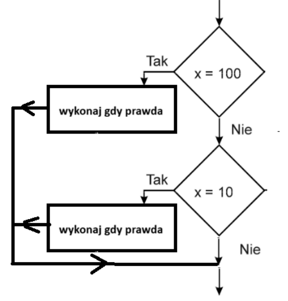
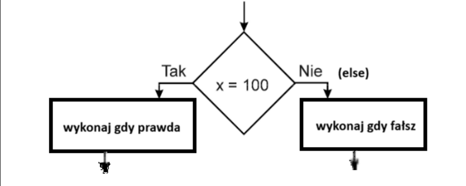

{
// instrukcje jeśli warunek_logiczny1 prawdziwy
}
if (warunek_logiczny2)
{
// instrukcje jeśli warunek_logiczny2 prawdziwy
}
2.instrukcja wyboru -> schemat blokowy

{
// instrukcje jeśli warunek_logiczny prawdziwy
}
else
{
// instrukcje jeśli warunek_logiczny fałszywy
}

!= - nie jest równe 2!=3 wynik -> prawda
> - jest większe 25>3 wynik -> prawda
< - jest mniejsze 2<3 wynik -> prawda
>= - większe lub równe 25>=3 wynik -> prawda
<= - mniejsze lub równe 2<=3 wynik -> prawda
== ( dwa razy ) -> instrukcja PORÓWNANIA
= (jeden raz) -> instrukcja PRZYPISANIA np. a=5
|| - lub np. x=3 y=4 (x==8 || y==6) wynik -> fałsz
! - zaprzeczenie np.x=3 y=4 !(x==y) wynik -> prawda